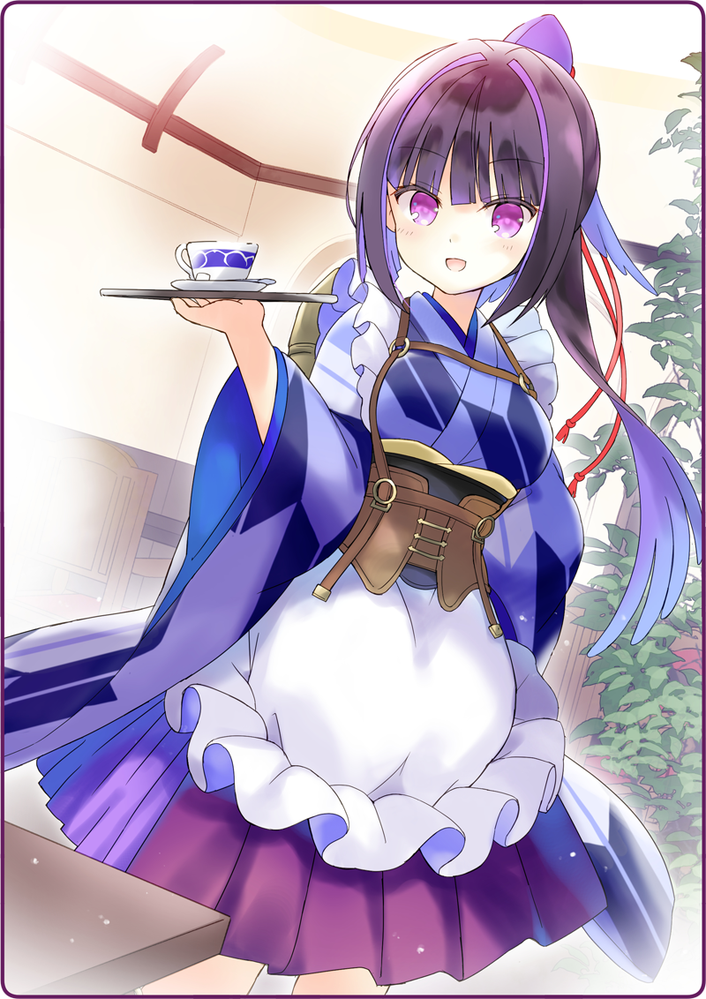

開店前の黒猫亭は広々としていて、静寂が漂っている。
広々としたカウンターと、規則正しく並べられたテーブル。
天板はぴかぴかに磨き上げられており、壁に掲げられたフィラメント電球の明かりを反射している。
奥には可愛らしいアップライトピアノが一台。
ベルベットのカバーから、ちらりとチェリーブラウンの鏡面が覗いている。

カップとソーサーが、かちりと鳴る。
鴉羽さんが淹れ立ての紅茶を、ポットから注いでくれた。
ふわりと、林檎のような爽やかな香りが鼻をくすぐる。
「すみません、ご馳走になっちゃって……」
ちらりと厨房のほうに視線を向ける。
入り口からわずかに灰桜の姿が覗いていて、ブレッドナイフを手に、せっせと食パンを切り分けていた。
「ははは……聞きました？」
「ボクと一緒です」
ティースプーンにきっちり３杯の砂糖を注いで、おいしい紅茶を味わった。
「そんな、お構いなく」
くすりと笑って、エプロンのリボンを揺らす。
アップライトピアノの前を通り過ぎて、その奥にある蓄音機の前に立つ。レコードに針を落とすと、ややあってから、ちょっともの哀しいような、ゆったりしたフルートの音色が響いていた。
「……このピアノ、誰か弾くんですか？」
「生の伴奏で、歌でも歌うとさぞかし楽しいでしょうねえ」
そうやって水を向けるが、鴉羽はなんとも微妙な表情。
じっとピアノを見つめて、懐かしむような、哀しむような、そんな顔を浮かべている。
「いまは？」
そういえば店内に入るとき、視界の端に貼り紙が写ったような気がする。あれが厨房係募集の求人だったのか。
灰桜「うささーーーーーん！」
ぴょこぴょこと厨房から、灰桜が跳ね出てくる。
灰桜「サンドイッチも召し上がってくださいっ」
「いやいや、そこまでは頼んでないよ」
ハムとチーズが挟まれたシンプルなサンドイッチが盛り付けられている。
その隣では、にこにこと笑う灰桜。
「じゃあ……いただきます」
小さく口を開けて、ぱくりと頬張る。
「………っ」
灰桜「みゅっ、泣いてますっ」
甘いものには目が無いが、ツンと来る辛さはすこし苦手だ。
でも涙がにじむのは、それだけが理由じゃ無い。
「でも、おいしいよ。とっても」
華やかな紅茶の香りと、ちょっぴり香辛料の利いた料理。
穏やかな音楽と、胸に沈み込むような笑顔。
この空間が、なんとも居心地がよかった。
「あの、鴉羽さん」
だからボクは、灰桜の先輩人形に改めて声をかけた。
「ボクをここで雇ってもらえませんか？」

 「おまちどおさま」
「おまちどおさま」